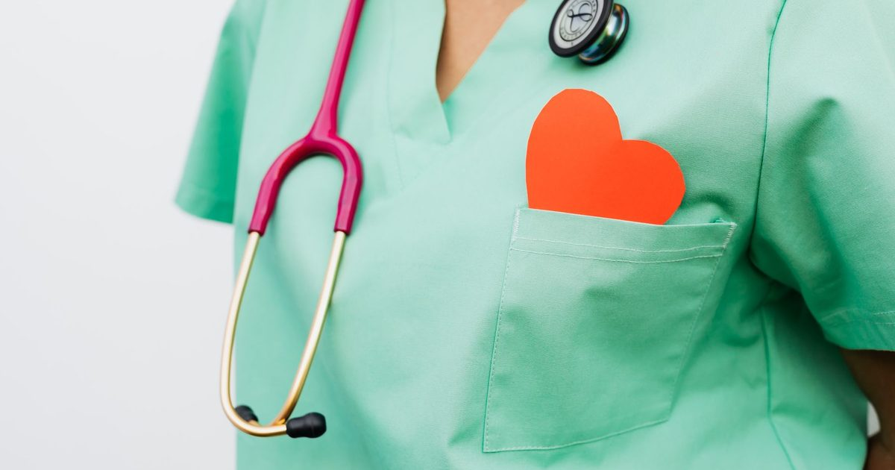

Information générale. Cet article s’appuie sur des recommandations publiées. Il ne constitue ni un diagnostic, ni une prescription, ni un conseil personnalisé : seul un examen par un chirurgien-dentiste ou un médecin permet de décider de la prise en charge qui vous convient. Ne commencez et n’arrêtez aucun traitement sur la seule foi de cet article.
L'essentiel
- La parodontite sévère est associée à plusieurs maladies cardiovasculaires, et ce lien persiste après prise en compte d’autres facteurs comme le tabac ou l’âge.
- Les preuves sont insuffisantes pour affirmer que traiter la parodontite prévient ou retarde les événements cardiovasculaires.
- Le traitement parodontal ne semble pas augmenter le risque cardiovasculaire ischémique.
- Sous anticoagulants ou antiplaquettaires, il ne faut pas modifier le traitement de sa propre initiative.
Les preuves épidémiologiques d’une association entre parodontite sévère et maladies cardiovasculaires sont solides.
Baisse de marqueurs de l’inflammation (CRP, interleukine 6) et meilleure fonction des parois des vaisseaux après traitement. Pas d’effet sur les lipides.
On ne peut pas affirmer que traiter les gencives prévient ou retarde les accidents cardiovasculaires.
Ce qui est observé
Le consensus conclut qu’il existe de solides preuves épidémiologiques d’une association entre parodontite sévère et maladies cardiovasculaires : maladie coronarienne, accident vasculaire cérébral, artériopathie périphérique, fibrillation auriculaire et insuffisance cardiaque. Une association avec la mortalité cardiovasculaire a aussi été observée. Associée ne veut pas dire cause : ce sont des liens statistiques observés dans des études.
Plusieurs mécanismes sont évoqués : les bactéries de la bouche peuvent passer dans la circulation sanguine et entretenir une inflammation générale ; elles ont été retrouvées dans des plaques d’athérome ; des facteurs génétiques communs ont été identifiés.
Ce que change le traitement des gencives
- Il existe des preuves modérées d’une baisse de marqueurs de l’inflammation (CRP, interleukine 6) et d’une amélioration de la fonction des parois des vaisseaux après traitement parodontal. Aucun effet n’a été observé sur les lipides.
- Les preuves sont insuffisantes pour affirmer que le traitement parodontal prévient ou retarde les accidents cardiovasculaires.
- Le traitement parodontal ne semble pas augmenter le risque cardiovasculaire ischémique. Un traitement de toute la bouche réalisé en 24 heures provoque en revanche une inflammation générale transitoire.
Anticoagulants et antiplaquettaires
Selon le consensus, la plupart des actes parodontaux à faible risque hémorragique peuvent être réalisés sans interrompre ces médicaments, avec des mesures locales pour limiter le saignement. En cas de doute, le chirurgien-dentiste prend l’avis du médecin ou du cardiologue. Le patient ne doit pas modifier lui-même son traitement : seuls le chirurgien-dentiste et le médecin qui le prescrit peuvent décider de l’adapter ou non. Si vous prenez plusieurs de ces médicaments à la fois, votre dentiste décide avec votre médecin.
- Informer votre dentiste
Votre état cardiovasculaire, vos traitements et tout traitement anticoagulant.
- Ne rien modifier de vous-même
Seuls le chirurgien-dentiste et le médecin qui prescrit le traitement peuvent décider de l’adapter.
- Des mesures locales
La plupart des actes à faible risque hémorragique se font sans interrompre le traitement, avec des mesures locales.
- Un avis médical en cas de doute
Le chirurgien-dentiste prend l’avis du médecin ou du cardiologue.
Les conseils du consensus aux patients
- Se brosser les dents deux fois par jour pendant au moins deux minutes et brosser les espaces entre les dents.
- Consulter dès l’apparition de signes (gencives rouges ou gonflées, saignements, dent qui bouge, espaces entre les dents, tartre) et faire un contrôle annuel même sans symptôme.
- Informer son dentiste de son état cardiovasculaire, de ses traitements et de tout traitement anticoagulant.
Le traitement des gencives est-il sans danger pour le cœur ?
Selon le consensus, le traitement parodontal ne semble pas augmenter le risque cardiovasculaire ischémique. Un traitement de toute la bouche réalisé en 24 heures provoque en revanche une inflammation générale transitoire : c’est une raison de plus d’informer votre dentiste de votre état cardiovasculaire et de vos traitements.
Les mots à connaître
- Association
- Lien statistique observé dans des études. Il ne prouve pas qu’une maladie en cause une autre.
- Athérome
- Dépôt qui épaissit la paroi des artères. Des bactéries de la bouche ont été retrouvées dans des plaques d’athérome.
- CRP et interleukine 6
- Substances du sang dont le taux augmente en cas d’inflammation.
- Fonction endothéliale
- Capacité des parois des vaisseaux à se dilater et à se contracter normalement.
- Antiplaquettaire, anticoagulant
- Médicaments qui limitent la formation de caillots. Seuls le chirurgien-dentiste et le médecin qui les prescrit peuvent décider de les adapter.
Questions à poser à votre praticien
Ces questions peuvent vous aider à préparer un rendez-vous. Les réponses dépendent de votre situation.
- Mon état cardiaque ou mes médicaments changent-ils la façon dont vous me soignez ?
- Faut-il que vous contactiez mon médecin ou mon cardiologue avant ce soin ?
- Le traitement de toute la bouche en une séance est-il adapté à ma situation ?
Questions fréquentes
Les maladies des gencives peuvent-elles provoquer un infarctus ?
Le consensus conclut à une association entre parodontite sévère et maladies cardiovasculaires (maladie coronarienne, accident vasculaire cérébral, artériopathie périphérique, fibrillation auriculaire, insuffisance cardiaque). Associé ne veut pas dire cause : ce sont des liens statistiques observés dans des études.
Soigner ses gencives protège-t-il le cœur ?
Les preuves sont insuffisantes pour affirmer que le traitement parodontal prévient ou retarde les accidents cardiovasculaires. Soigner ses gencives reste utile en soi.
Le traitement parodontal est-il risqué quand on a une maladie du cœur ?
Il ne semble pas augmenter le risque cardiovasculaire ischémique. Un traitement de toute la bouche en 24 heures provoque une inflammation générale transitoire.
Dois-je arrêter mes anticoagulants avant un soin des gencives ?
Non, pas de votre propre initiative. Selon le consensus, la plupart des actes à faible risque hémorragique peuvent être réalisés sans interrompre ces médicaments, avec des mesures locales. Votre dentiste décide avec votre médecin.
Que dois-je dire à mon dentiste ?
Votre état cardiovasculaire, vos traitements et tout traitement anticoagulant ou antiplaquettaire.
En résumé
Parodontite sévère et maladies cardiovasculaires sont associées, mais il n’est pas démontré aujourd’hui que traiter les gencives évite un infarctus ou un accident vasculaire cérébral. Soigner ses gencives reste utile en soi, et il faut informer son dentiste de son état cardiaque.
Références
- Sanz M, Marco del Castillo A, Jepsen S, et al. Periodontitis and cardiovascular diseases: consensus report. J Clin Periodontol. 2020;47(3):268-288. doi:10.1111/jcpe.13189 https://doi.org/10.1111/jcpe.13189
- Fédération européenne de parodontologie (EFP). Perio & Cardio : rapport de consensus scientifique (EFP et World Heart Federation). https://www.efp.org/for-patients/gum-disease-general-health/clinical-guidelines/scientific-report/
Pour une question sur votre situation personnelle, un examen est nécessaire : coordonnées et prise de rendez-vous sur la page Contact. N’envoyez pas d’informations de santé par le formulaire en ligne.